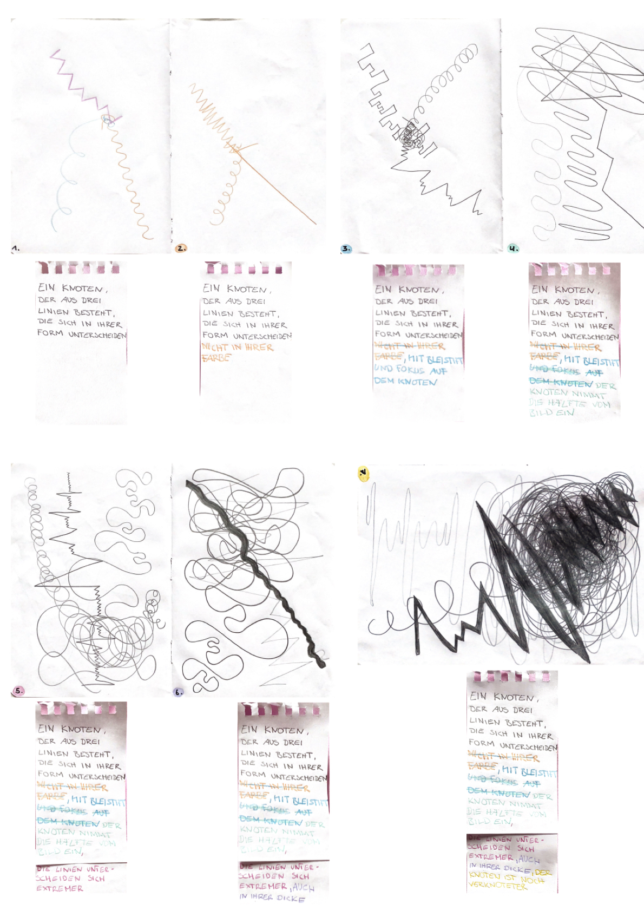

Analoger Algorithmus
Die Aufgabe war für mich persönlich total hilfreich, um wirklich erstmal ein Verständnis für den Charakter von einem Algorithmus zu bekommen. Zuvor war das Wort Algorithmus fast schon ein leerer technischer Begriff, den ich nicht direkt mit Gestaltung in Verbindung gebracht hätte.
